O que foi a Primeira Guerra Mundial?
A Primeira Guerra Mundial foi um grande conflito internacional que ocorreu entre 1914 e 1918, envolvendo principalmente países europeus divididos em dois blocos: a Tríplice Entente e a Tríplice Aliança. A guerra começou após o assassinato do arquiduque Francisco Ferdinando e foi marcada pelo uso de trincheiras, novas tecnologias militares e combates extremamente violentos. Ao final, milhões de pessoas morreram, impérios foram destruídos e o cenário político mundial mudou, contribuindo para o surgimento de novos conflitos, como a Segunda Guerra Mundial.
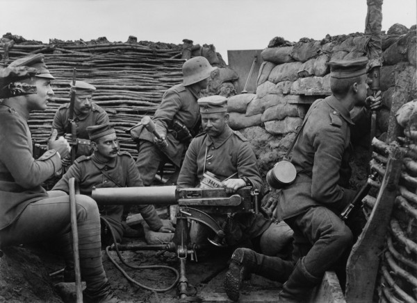
Contexto histórico
A Primeira Guerra Mundial ocorreu entre 1914 e 1918 e foi resultado de uma série de tensões acumuladas entre as potências europeias ao longo das décadas anteriores. No início do século XX, a Europa vivia um período de forte nacionalismo, disputas territoriais, rivalidades econômicas e expansão imperialista. Além disso, a formação de alianças militares dividiu os países em dois grandes blocos: a Tríplice Entente e a Tríplice Aliança. O estopim para o conflito foi o assassinato do arquiduque Francisco Ferdinando, herdeiro do trono do Império Austro-Húngaro, em Sarajevo, em 1914, desencadeando uma guerra de escala inédita.
 Voltar ao topo
Voltar ao topo
Causas da Primeira Guerra Mundial
As causas da Primeira Guerra Mundial foram múltiplas e interligadas. O militarismo crescente, o sistema de alianças, o imperialismo e o nacionalismo exacerbado criaram um ambiente de tensão na Europa. O assassinato do arquiduque Francisco Ferdinando foi o gatilho que ativou esse sistema explosivo de alianças em 1914.
Voltar ao topoEntre em Contato
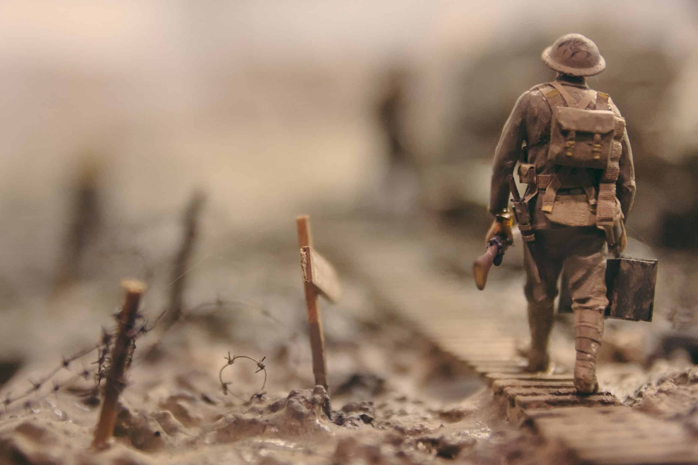
Painel de Fotos
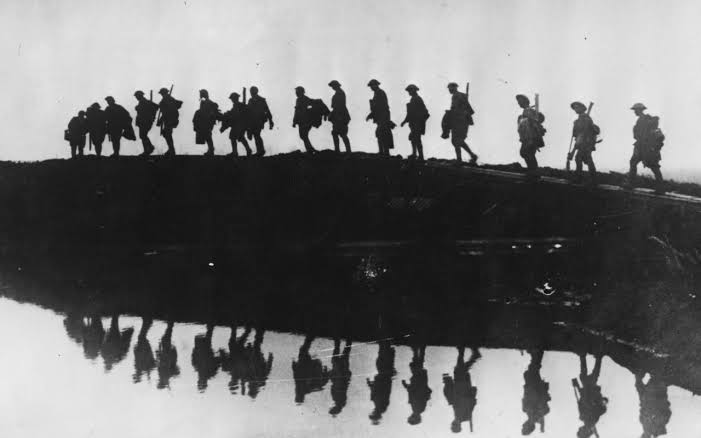
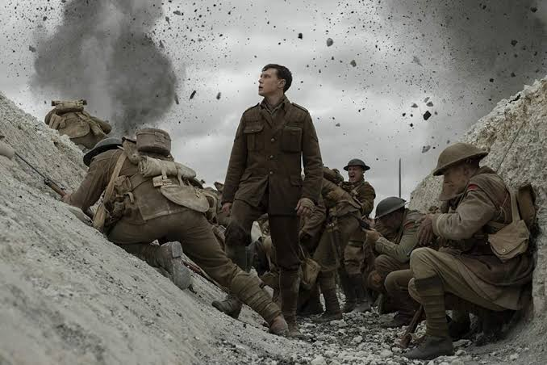
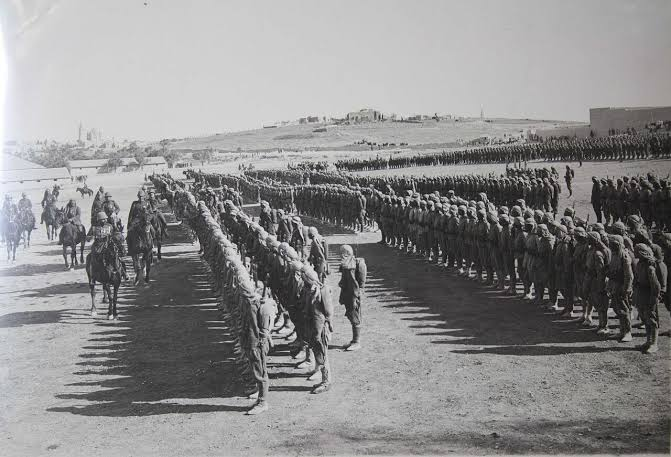
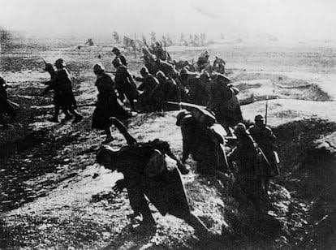
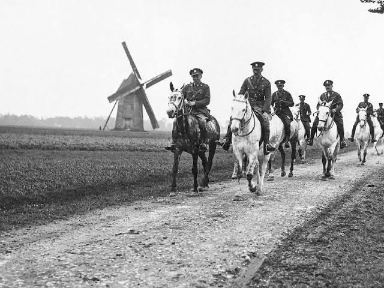
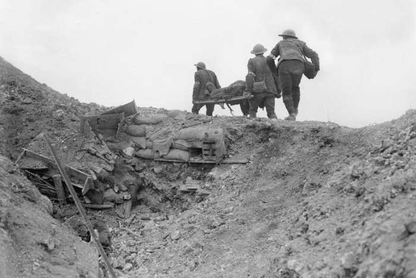
Galeria de Imagens
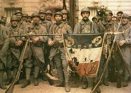
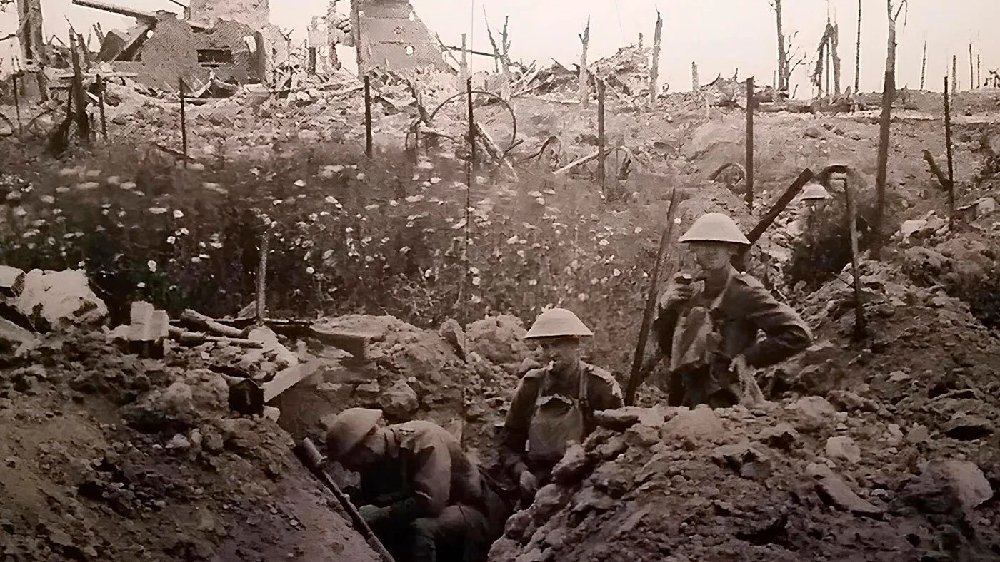
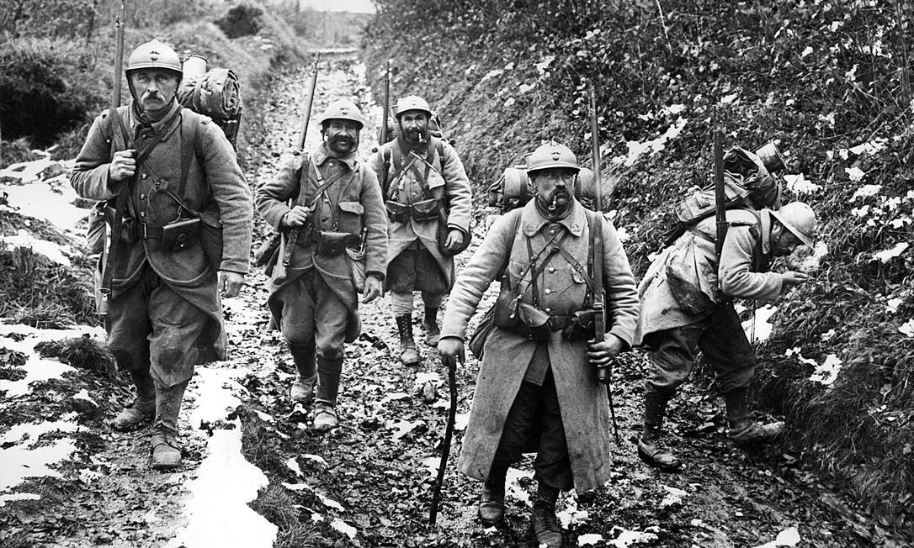
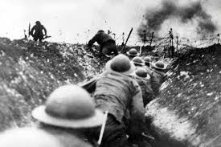
Referências
Conteúdo baseado em livros de história e materiais educacionais.
Voltar ao topo